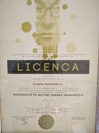
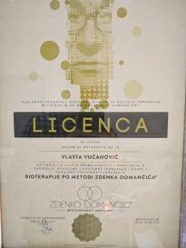
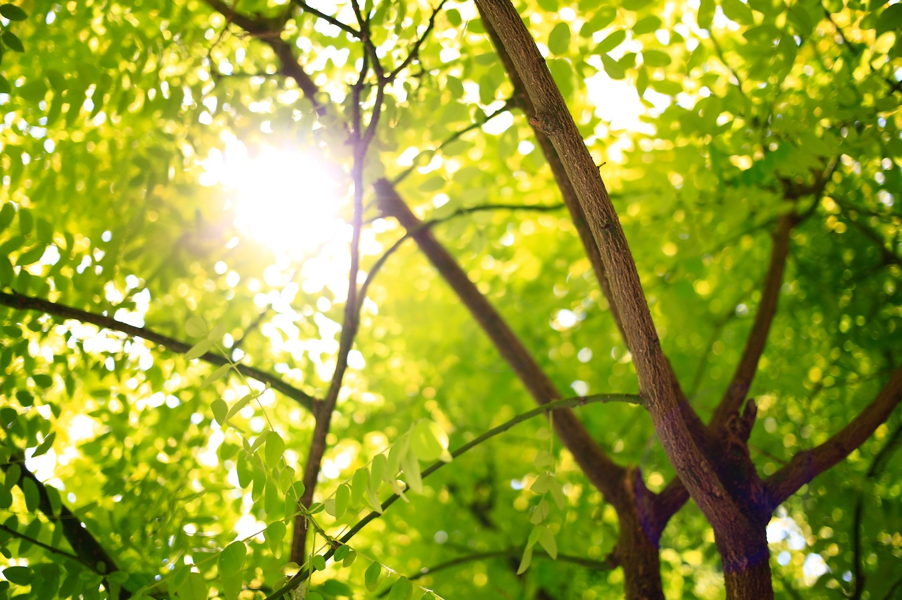

BIOTERAPIJA VUČANOVIĆ
Sklad, ljepota, mir i zdravlje postoje i egzistiraju svugdje oko nas i u nama samima, kada to sebi dopustimo i priuštimo. Potreba za fizičkim i duševnim zdravljem, potreba za održanjem psihofizičke ravnoteže kao preduvjeta sveukupnog blagostanja, razlog su što čovjek potraži pomoć u bioenergetskim terapijama.
 

O METODI
Metoda Zdenka Domančića je tehnika korištenja bioenergije u iscjeljivanju. To je jednostavna, moćna, neinvazivna i djelotvorna tehnika iscjeljivanja s blagotvornim učinkom. Može se primjenjivati bez obzira na dob ili stanje koje se tretira, ukoliko se provodi na pravilan način.
BIOTERAPIJA
Znanstvenici su stoljećima proučavali organsku i anorgansku materiju, mjerili, dokazivali, otkrivali, cijepali atome, analizirali atomske čestice. Otkrića su bila moćna, vrijedna, bili su to krupni koraci u razvoju ljudske misli. Ali fizika je također shvatila da se široki spektar neistraženih pojava zbiva na pod atomskoj razini.

O MENI
Rođena sam u Zagrebu 1960. godine.
Diplomirala sam na Arhitektonskom fakultetu u Zagrebu, te na talijanskoj školi Dizajna interijera. Jedno vrijeme radila sam u struci, a potom u drugim područjima.
Više od 20 godina moj veliki interes i pažnju privlače Znanja Zapada i Istoka, drevna i moderna, iz oblasti psihologije, duhovnosti, te rubnih područja znanosti.